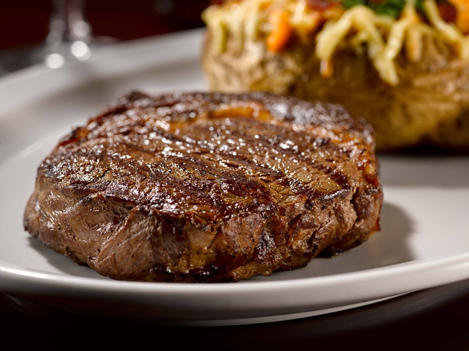

Principales

Bife de chorizo

Tira de asado

Ojo de bife
Bonus track
¡Receta de ojo de bife!
Ingredientes
- 1 ojo de bife (aproximadamente 300-400 g)
- Sal gruesa y pimienta al gusto
- 2 cucharadas de aceite de oliva o manteca
- 2 dientes de ajo(opcional)
Pasos a seguir
- Espolvorea sal gruesa por ambos lados de la carne. Añade pimienta negra recién molida a gusto.
- Coloca una sartén pesada (preferentemente de hierro fundido) a fuego alto.Agrega el aceite de oliva o un poco de manteca y deja que se caliente bien (debe humear ligeramente).
- Coloca la carne en la sartén y cocina sin mover durante unos 3-4 minutos para un término medio (ajusta el tiempo según el grosor y el punto deseado).Da vuelta la carne y cocina otros 3-4 minutos del otro lado.
- Retira la carne de la sartén y déjala reposar en un plato tapada con papel aluminio durante 5 minutos. Esto permite que los jugos se redistribuyan.